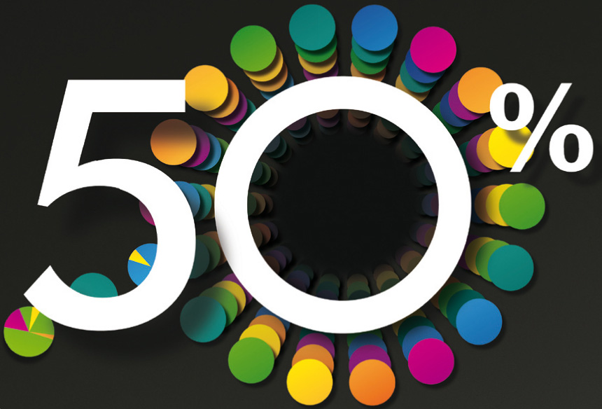

WebP
Can i use it?
Created by LV at 10th Sept. 2014
啥?
一种新的图片格式
2011年 Google
无损压缩（同质PNG，尺寸小25%）
有损压缩（同质JPG，尺寸小25~34%）
哪?
Chrome Webstore
全站90%图片应用webp
QZone
少量应用
淘宝&天猫
大量应用
兼容性？
各主流浏览器实际支持情况
| OS\BROWSER | UC浏览器(9.0+) | QQ浏览器(5.0+) | Chrome浏览器(36.0+) | Android内置浏览器(4.0+) | 微信内置webview | QQ内置webview |
|---|---|---|---|---|---|---|
| IOS | 否 | 否 | 是 | N/A | 否 | 否 |
| Android | 是 | 是 | 是 | 是 | 否 | 否 |
那么问题来了？到底用还是不用呢

大约50%的用户受益，另外50%的用户需要兼顾处理
如何兼顾不支持webp的浏览器？
按需加载，优雅降级


- img标签使用1px的透明gif做填充图片
- 利用data-src放普通图片
- 利用data-webp放webp图片
- 利用js判断浏览器是否支持webp，从而选择合适的图片格式
如何判断浏览器是否支持webp？
(function() {
if (this.WebP) return;
this.WebP = {};
WebP._cb = function(isSupport, _cb) {
this.isSupport = function(cb) {
cb(isSupport);
};
_cb(isSupport);
if (window.chrome || window.opera && window.localStorage) {
window.localStorage.setItem("webpsupport", isSupport);
}
};
WebP.isSupport = function(cb) {
if (!cb) return;
if (!window.chrome && !window.opera) return WebP._cb(false, cb);
if (window.localStorage && window.localStorage.getItem("webpsupport") !== null) {
var val = window.localStorage.getItem("webpsupport");
WebP._cb(val === "true", cb);
return;
}
var img = new Image();
img.src = "data:image/webp;base64,UklGRjoAAABXRUJQVlA4IC4AAACyAgCdASoCAAIALmk0mk0iIiIiIgBoSygABc6WWgAA/veff/0PP8bA//LwYAAA";
img.onload = img.onerror = function() {
WebP._cb(img.width === 2 && img.height === 2, cb);
};
};
WebP.run = function(cb) {
this.isSupport(function(isSupport) {
if (isSupport) cb();
});
};
})();
按需加载的优缺点
- 优点：特别适用于内容图较多较大的手机页面，可以让大约50%的用户显著提升图片加载速度，较少流量消耗
- 缺点：需要为按需加载的图片准备一套webp格式的
银弹？
WebPJS
借助FLASH兼容不支持webp的浏览器
下载所需文件-webpjs.appspot.com
在页头引入JS
WebPJS的优缺点
- 借助flash让所有浏览器兼容webp
- 只需要一套webp图片
- 需要引入额外的2个文件，共计100+KB...
- 利用flash在客户端进行解码，渲染性能有点渣
WebPJS并不是银弹，Google出品也不一定是精品~
小结
- webp的优点和应用情况
- webp的兼容性
- 如何在网页中按需加载webp图片
- 如何让所有浏览器兼容webp - WebPJS
要结束了么？
2个好东西
grunt-webp
一个将普通图片转换成webp图片的nodejs包
LazyPic.JS
一个支持webp图片的延迟加载组件
参考资料
“WebPJS - Google's new image format WebP for not supported browsers (with alpha-channel)”
“Script to feature detect if browser support WebP.”